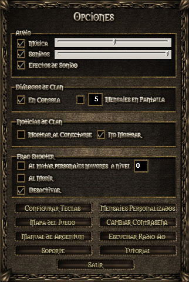

Imagen del juego:

1
Consolas múltiples |
Existen más de una consola, accesible mediante pestañas, las cuales se pueden cambiar entre sí mediante "control+tab". Al llegar un mensaje a alguna consola particular, si la misma no es la activa, se iluminará la misma. En total existen cuatro tipo de consolas:
- General: todos los mensajes.
- Agrupaciones: clan + party + administrativos.
- Acciones: combate + trabajo + administrativos.
- Custom: a elección del usuario acorde a la lista de mensajes.
|
2
Chat |
Pulsando tecla ENTER activás el casillero para escribir un mensaje o comando. Para enviarlo, presioná ENTER nuevamente. |
3
Pantalla de Juego |
En la pantalla central es donde verás el desarrollo del Juego. Desde allí, podrás interactuar con el resto de los jugadores. Con solo pasar el mouse por los personajes sabrás si son Ciudadanos (nombres azules) o Criminales (nombres rojos).
Para saber qué función tiene cada comerciante u objeto, tenés que hacer click en ellos. |
4
Personaje Propio |
Tu personaje siempre se encontrará en el centro de la pantalla. |
5
Nombre |
Indica el nombre del personaje con el que estás jugando. |
6
Nivel |
En esta zona verás el nivel que tiene el personaje, la experiencia que lleva acumulada y la experiencia que necesita para pasar al siguiente. Cuando subas de nivel, la cruz diamante se iluminará, esto significa que existen puntos de habilidad libres para asignar. Deberás clickear encima de ese símbolo para poder asignarlos. Se recomienda consultar previamente la Sección: Nivel, Experiencia y Puntos de Habilidad. |
7
Inventario |
El inventario muestra los objetos que el personaje tiene encima. Desde allí, podrás equipar las armas, ropas, herramientas, etc., sólo basta con seleccionar el ítem y presionar la TECLA EQUIPAR (E).
Los objetos que se encuentren equipados aparecerán con un signo (E). Se debe tener cuidado a la hora de elegir qué llevar en el inventario ya que la mayoría de los items caen al piso cuando uno muere, y por ende, se pierden. |
8
Hechizos |
Desde esta zona podrás ver y seleccionar los hechizos. |
9
Indicadores |
Aquí verás identificados en diferentes colores el estado de la energía (amarillo), la salud (rojo), la mana (Azul), la comida (verde) y sed (Verde-azulado) del personaje.
También podrás ver los niveles de Fuerza y Agilidad que tiene tu personaje al subirlos mediante hechizos o pociones. |
10
Billetera |
Aquí se muestra la denominada billetera, es la cantidad de oro que tu personaje posee. Para más información se recomienda consultar Sección: Oro, billetera y muerte |
11
Mapa |
Este botón te abrirá una ventana emergente con el mapa del juego. |
12
Grupo |
En el botón grupo podrás ver los integrantes de tu party, en caso de haber creado una y/o pertenecer a una. Para más información Sección: Party |
13
Opciones |
En el botón Opciones podrás ver las opciones del juego: activar/desactivar la música, los efectos de sonido, etc., (para más información ver la tabla de abajo "Opciones del Juego") |
14
Estadísticas |
En el botón de estadísticas podrás ver los atributos, estados, reputación y puntos de habilidad asignados. |
15
Clanes |
Sirve para ver una lista de clanes fundados por usuarios y si el personaje es líder de un clan podrá ver toda una ventana distinta (más información en Sección: Clanes). |
16
Brújula y Seguros |
Los números amarillos van cambiando a medida que el personaje camina. Indican la ubicación en el mapa según coordenadas X,Y (el centro de un mapa se ubica siempre en 50,50).
También verás varios iconos gráficos que te ayudarán a saber si, por ejemplo, tenés el seguro activado (la llave), el auto lanzar hechizos, el macro de trabajo activado o el seguro de resurrección. |
17
Chat de Clan |
En esta parte de la pantalla, verás los indicadores que muestran las defensas min/max que proporcionan tus objetos equipados, que son las armaduras/túncias, los escudos y los cascos o sombreros. También el daño min/max que proporciona tu arma.
Pulsando TECLA SUPRIMIR se mostrará debajo una nueva zona de chat. Si pertenecés a un clan, ésta te permitirá hablar con el resto de sus miembros. |
18
Fps |
Son las siglas de "Frame per second" o "Imagenes por segundo". El máximo es 101. Si sucede una ralentización (esto es, que se presenten en pantalla más objetos de los que la máquina puede mover con soltura) entonces la tasa de fps puede caer a un número más bajo. |
|
20
Auto Run |
Permite al usuario mover a su personaje en la dirección deseada. Para mayor información click aquí. |
21
Mini mapa |
Permite al usuario ver donde se encuentra en el mapa, además se ver a los NPCs hostiles y algunos no hostiles. Para mayor información click aquí. |
Opciones del Juego:

| Audio |
Permite desactivar o activar la música, los efectos de sonido y subir o bajar el volumen de los mismos. |
| Diálogos de Clan |
Permite ver los mensajes de clan en la consola o en la pantalla de juego y configurar la cantidad máxima de mensajes antes de que se borren los viejos (sólo si esta configurado como mensajes en pantalla de juego). |
| Noticias de Clan |
Permite activar o desactivar las noticias del clan que aparecen al entrar al juego. |
| Frag Shooter |
Este sistema saca fotos cuando tu personaje mata personajes mayor al nivel que hayas configurado (0 por defecto), o al morir tu personaje. Puedes dejarlo desactivado si lo deseeas. |
| Configurar teclas |
Permite configurar las teclas a gusto de cada uno. |
| Mensajes Personalizados |
Permite guardar hasta 10 mensajes distintos (inclusive comandos), los cuales los podés utilizar con las TECLAS del 1 a 0. |
| Mapa del Juego |
Abre el Mapa del Juego. |
| Cambiar contraseña |
Permite cambiar la contraseña, para hacerlo debe ingresar la contraseña actual, la nueva y repetir la misma. |
| Manual de Argentum Online |
Abre el navegador con la web del Manual de Argentum Online. |
| Escuchar RadioAO |
Abre el navegador con la web de la Radio Oficial del Servidor. |
| Soporte |
Abre el navegador con la web del Soporte de Argentum Online. |
| Tutorial |
Abre la ventana donde se encuentran explicaciones fundamentales sobre algunas cosas del juego. |
| Salir |
Cierra la ventana de opciones. |
Colores de diálogos personalizados
Los colores de diálogos personalizados permiten al usuario decidir qué color van a tener las frases y diálogos de NPCs, otros usuarios, etc. Esto será aplicable tanto "sobre la cabeza" como en consola, tanto en el clan, party y chat normal.
Esto será en el Cliente y no en el Servidor, por lo tanto, sólo el usuario verá los colores. Los demás usuarios los seguirá viendo comunes y corrientes (o como lo haya configurado cada uno).

|
|